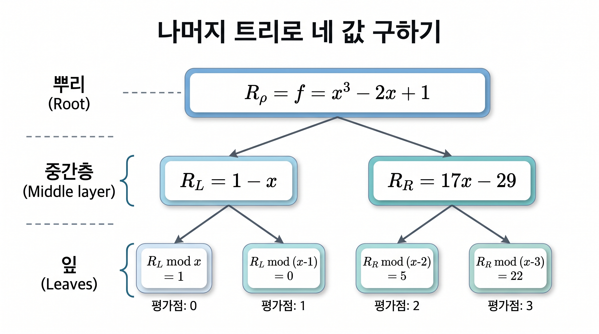

절 8.1에서는 단위근에서 다항식을 평가하는 문제를 FFT로 빠르게 해결했습니다. 평가점들이 단위근의 거듭제곱으로 주어지면 짝수 차수 항과 홀수 차수 항을 분리하는 재귀 구조를 이용할 수 있습니다. 그러나 임의로 주어진 평가점에는 이러한 구조가 없을 수 있습니다. 이 절에서는 평가점들을 근으로 갖는 다항식을 만들고 나머지 연산을 반복하여, 임의의 점에서도 빠르게 평가하는 방법을 설명합니다.
계수와 평가점은 모두 체 \(\mathbb F\)에 속한다고 가정합니다. 호너 방법은 다항식 \(f(x)=c_d x^d+c_{d-1}x^{d-1}+\cdots+c_1x+c_0\)를
와 같이 계산되며, 이 알고리즘은 한 점에서 값 하나를 구하는 데 \(O(d)\)번의 체 연산만 필요합니다. 따라서 차수가 \(d\) 이하인 다항식을 \(n\)개의 점에서 각각 독립적으로 호너 방법으로 평가하면, 각 점마다 \(O(d)\)의 비용이 들므로 총 \(O(nd)\)번의 체 연산이 필요합니다. 특히 \(d < n\)이면 \(O(nd)=O(n^2)\)이므로, 단순한 반복 평가는 점의 수가 늘어날수록 제곱 비례의 비용을 갖습니다. 고속 다중점 평가의 핵심은 서로 다른 평가에서 필요한 계산을 공유하는 것입니다.
정의8.3.1.다중점 평가.
다항식 \(f\in\mathbb F[x]\)와 평가점 \(a_0,\ldots,a_{n-1}\in\mathbb F\)에 대하여, 순서 있는 값들의 목록
따라서 잎의 상수들을 평가점의 원래 순서대로 읽으면 \((1,0,5,22)\)를 얻습니다.

보기8.3.10.나머지 트리로 네 값을 구하기
정리8.3.11.고속 다중점 평가의 정확성과 복잡도.
\(n\geq 1\)개의 평가점에 대한 부분곱 트리와 나머지 트리를 구성하면, 지표 \(j\)에 해당하는 잎의 나머지는 \(f(a_j)\)이다. 이 결론은 평가점이 중복되는 경우에도 성립한다.
증명.
모든 노드 \(v\)에 대해 \(R_v=f\bmod G_v\)임을 귀납적으로 보이면 됩니다. 뿌리에서는 정의에 따라 \(R_\rho=f\bmod G_\rho\)이므로 성립합니다. 이제 어떤 노드 \(v\)의 자식 \(u\)를 생각합시다. 부모 노드에서 \(R_v=f\bmod G_v\)이고, 자식의 다항식 \(G_u\)는 부모의 다항식 \(G_v\)를 나누므로
가 됩니다. 따라서 자식 노드에도 같은 성질이 유지됩니다. 마지막으로 잎에서는 \(G_v=x-a_j\)이므로, 나머지 다항식은 \(f\)를 \(x-a_j\)로 나눈 나머지입니다. 이는 \(f(a_j)\)와 같으므로 \(R_v=f(a_j)\)를 얻습니다. 따라서 각 잎의 나머지는 해당 평가점에서의 다항식 값을 나타내며, 잎을 지표 순서대로 읽으면 다중점 평가 결과가 됩니다. 이 논증은 서로 다른 잎의 다항식들이 서로소라는 가정을 사용하지 않으므로, 평가점이 중복되더라도 같은 방식으로 성립합니다.
이제 \(\mathbb F=\mathbb C\)인 경우의 계산 비용을 살펴봅니다. 절 8.1에서 보았듯이, FFT를 이용하면 두 다항식의 곱을 빠르게 계산할 수 있습니다. 곱의 차수보다 큰 길이의 단위근 배열을 택하고 계수에 영을 덧붙인 뒤, FFT로 두 다항식을 평가하고 각 점에서 값을 곱한 다음 역 FFT를 적용하면 곱의 계수를 얻습니다. 차수가 \(m\) 이하인 다항식들의 곱을 구하는 비용을 \(M(m)\)이라 하면, FFT를 이용하여 \(M(m)=O(m\log m)\)으로 계산할 수 있습니다. 여기서 복잡도는 복소수의 정확한 산술 연산을 가정한 연산 횟수입니다.
FFT는 나머지 계산도 가속합니다. 다항식 나눗셈에서 계수의 순서를 뒤집으면, 몫의 계산을 상수항이 영이 아닌 다항식의 역수를 필요한 차수까지 구하는 문제로 바꿀 수 있습니다. 특히 부분곱 다항식은 최고차항의 계수가 \(1\)이므로, 계수를 뒤집은 다항식의 상수항도 \(1\)입니다. 다항식 \(H\)에 대해 \(HS\equiv 1\pmod{x^k}\)인 근사 역수 \(S\)를 알고 있으면,
입니다. 이는 호너 방법을 각 점에 독립적으로 적용할 때의 \(O(n^2)\) 비용보다 작습니다. 차수 \(d\)가 \(n\) 이상이면 먼저 \(f\bmod G_\rho\)를 계산하며, 이 초기 계산까지 포함한 비용은 \(O(M(d+n)+M(n)\log n)\)으로 잡을 수 있습니다.
이 방법에서 평가점 \(a_j\) 자체가 단위근일 필요는 없습니다. FFT는 임의의 평가점에서 직접 값을 구하는 대신, 부분곱 트리와 나머지 트리에 필요한 다항식 곱셈과 나눗셈을 빠르게 수행하는 도구로 쓰입니다. 반면 평가점들이 FFT에 맞는 단위근 배열이면 트리를 구성하지 않고 FFT를 직접 적용하여 \(O(n\log n)\)번의 연산으로 평가할 수 있습니다. 실제 부동소수점 복소수 계산에서는 반올림 오차가 생기므로, 위의 정확성 증명 및 연산 횟수 분석과 수치적 안정성은 별도로 고려해야 합니다.